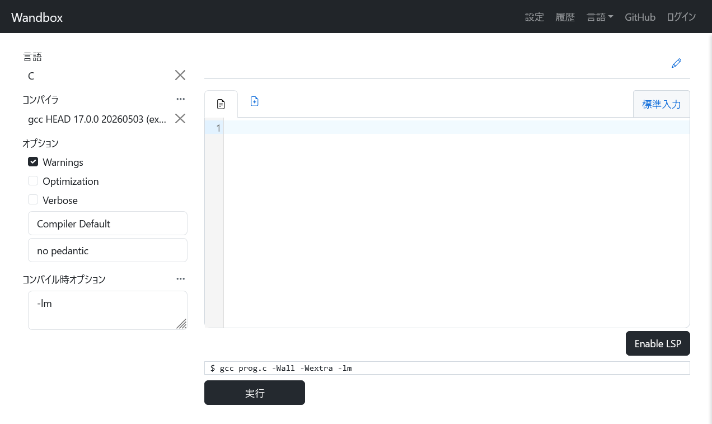
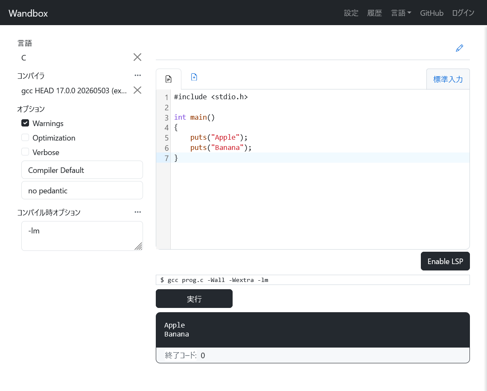
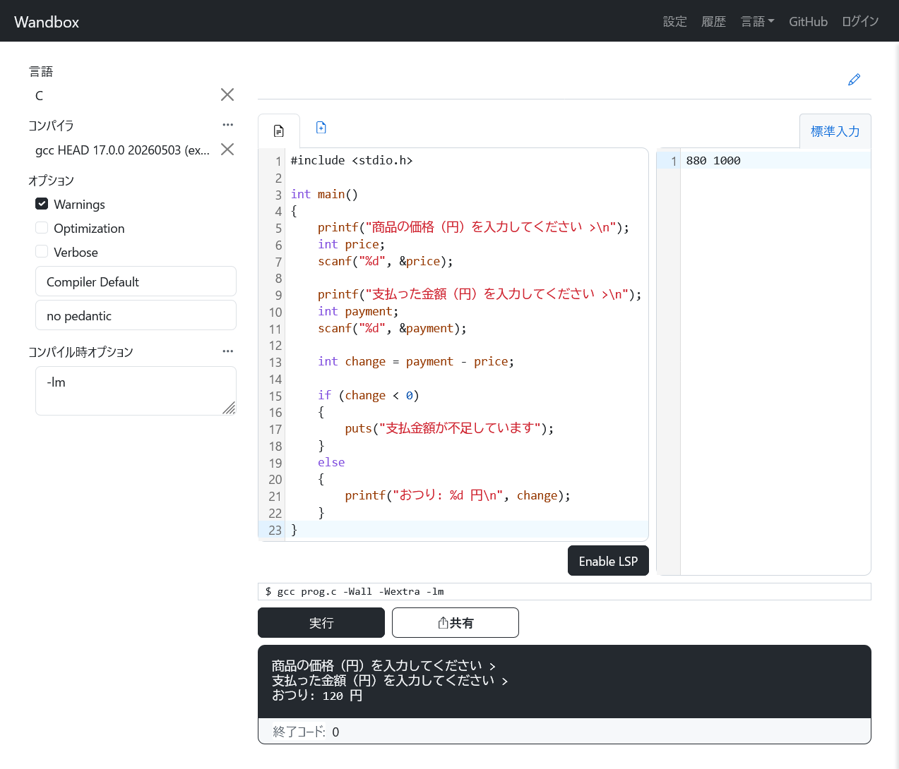

Wandbox で C 言語を始める¶
このページでは、Wandbox（ワンドボックス）を使って C 言語のプログラムを実行する方法を説明します。Wandbox を使うと、パソコンやタブレットに開発環境をインストールせずに、Web ブラウザだけで C 言語のコードを試せます。
| デバイス | 対応状況 |
|---|---|
| Windows | ✅ |
| macOS | ✅ |
| Ubuntu | ✅ |
| iPad | ✅ |
| Chrome OS | ✅ |
| Android タブレット | ✅ |
1. Wandbox とは¶
Wandbox は、ユーザー登録なしで使えるオンラインコンパイラです。C 言語を含むさまざまなプログラミング言語で、コードのコンパイルと実行結果の確認ができます。パソコンやタブレットに何もインストールせずに、手軽に C 言語のプログラムを試したいときに便利です。
注意点¶
- 入力が必要なプログラムでは、実行前に「標準入力」欄へ入力内容を書きます
- 実行中にキーボードから対話的に入力することはできません
- ボランティアで運営されているサービスのため、アクセスが集中した際などに、コンパイルや実行に時間がかかることがあります
2. プログラムを書いて実行する¶
2.1 Wandbox を開く¶
- https://wandbox.org/ にアクセスします
2.2 設定を選ぶ¶
- 画面左のメニューの言語で「C」を選択します
- コンパイラで「gcc 15」より新しいバージョンを選択します
（下記の例ではgcc HEAD 17.0.0） - オプションに「C11(GNU)」がある場合、「Compiler Default」に変更します
- コンパイル時オプション欄は、最初は空欄のままでかまいません。
第 10 章以降で数学関数を使う場合だけ-lmを入力します

2.3 コードを書いて実行する¶
- 画面の中央がエディタです。ここに C 言語のコードを書いていきます
- エディタ上にコードを書いたら「実行」を押すとコンパイルが始まります
- コンパイルが成功したら、そのプログラムが実行され、出力が表示されます

3. 入力を扱うプログラムを実行する¶
- 第 3 章以降に出てくる
scanf()のように、標準入力からの入力を扱うプログラムを実行する場合、あらかじめ右側の「標準入力」欄に入力内容を記述します - 入力内容が複数ある場合、半角空白や改行で区切ります

実行するサンプルコード
#include <stdio.h>
int main()
{
printf("商品の価格（円）を入力してください >\n");
int price;
scanf("%d", &price);
printf("支払った金額（円）を入力してください >\n");
int payment;
scanf("%d", &payment);
int change = payment - price;
if (change < 0)
{
puts("支払金額が不足しています");
}
else
{
printf("おつり: %d 円\n", change);
}
}
4. 書いたソースコードを他人と共有する¶
- 実行後に「共有」を押すと、書いた内容を URL で共有できます
- URL は Web ブラウザの URL 欄からコピーします
5. Wandbox のよくあるトラブルとその対処¶
cannot find -lm と表示される
エラーメッセージ
/usr/bin/ld: cannot find -lm : No such file or directory
collect2: error: ld returned 1 exit status
- 原因: Wandbox の「コンパイル時オプション」の欄に、不必要な空白文字が入っています。それがファイル名と解釈され、空白文字のファイルをコンパイルしようとしてエラーになっています
- 解決法: 「コンパイル時オプション」の欄を空にします
undefined reference to sqrt と表示される
エラーメッセージ
/usr/bin/ld: /tmp/ccUIxmmj.o: in function `main':
prog.c:(.text+0x28): undefined reference to `sqrt'
collect2: error: ld returned 1 exit status
- 原因: 数学関数を使うためのライブラリがリンクされていません（第 10 章 参照）
- 解決法: Wandbox の「コンパイル時オプション」欄に
-lmを追加します